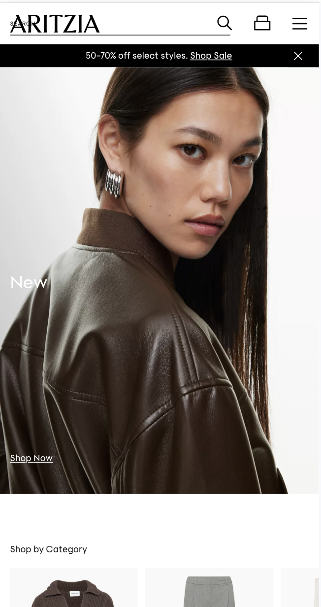
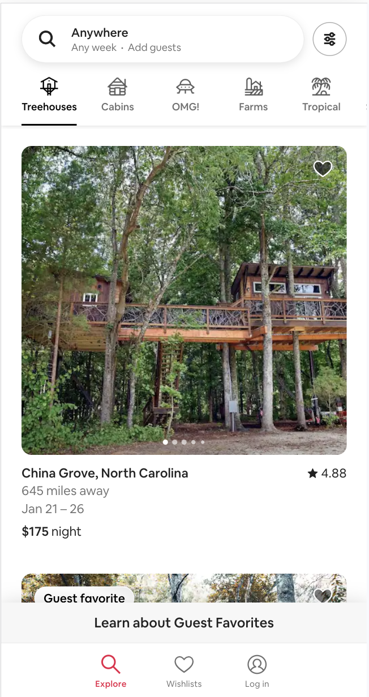
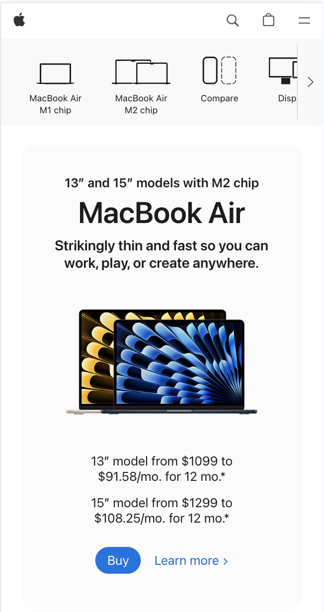

Visual Hierarchy
Aritzia
aritzia.com To exemplify the principle of Visual Hierarchy, I chose the webpage for the company Aritzia. Visual hierarchy is the principle of ranking design elements in order of how you want the user to view them and interact with them. There are many ways that companies can achieve this. I chose this website because as soon as you enter their homepage, you become quickly tuned in. In terms of hierarchy, they certainly keep the most important links/elements at the fore front of their page. At the very top of the page, and immediately in the user’s line of sight, is a banner notifying the user of a special sale event going on. Below this, we find the second most important element, a link and large image exemplifying their new clothes. Further down the page, we find images along with shopping categories, which is most likely where the user is planning on going if uninterested in the first two eye-catchers. This website keeps their user engaged by bringing the organization’s events and main attractions into clear focus. As you continue to scroll down the page, you find much more of the same pattern.
Fitt's Law
Airbnb
airbnb.com To showcase a good application of Fitt's Law, I chose Airbnb's web design approach. Fitt’s Law states that the time it takes the reach a target is based upon the size of and distance to the target. In terms of web design, this usually suggests that the closer and larger a target, the more quickly a user will be able to click it. When designing a website with good application of Fitt’s Law we would expect that the user would have quick access to buttons they would need often. To exemplify this principle, I chose Airbnb’s website because I liked the fact that they have three main buttons right at the base of the mobile view screen. This gives the user quick access to the major events they would need to perform including airbnb exploration, favorite airbnbs, and profile adjustments. Something I also recognized about Airbnb’s website was their navigation bar with the varying Airbnb categories. I feel that the size and attractiveness of these link images adds to the application of Fitt’s Law even though they are farther up the screen. The user is able to see these links clearly at all times which makes it easier to reach them quickly.
White Space and Clean Design
Apple
apple.com The principle of white space in web design is about creating a mental break for the user as they move between different elements and information. It allows user to both process the design of the site while also focusing on the many different aspects of the page being presented. For this design principle, I chose Apple. I feel that this website is a great example of how companies working with loads of information can still get things across to the user in a simple yet impactful way. Much of Apple’s overall design tactics include whitespace, and in many ways, it is their signature look. We can see this first at the navigation bar with a small logo accompanied by other small buttons to aid the user’s shopping experience. For the rest of the home page, we find a simple and clear design as well. Here as the user, we are able to focus on their products at the top while also learning about their new MacBook Air. This product has a lot of key features; however, the user can quickly grasp the most important features due to short descriptions and spaced-out lines. Overall, the page is filled with only what is necessary to grab the user’s attention.